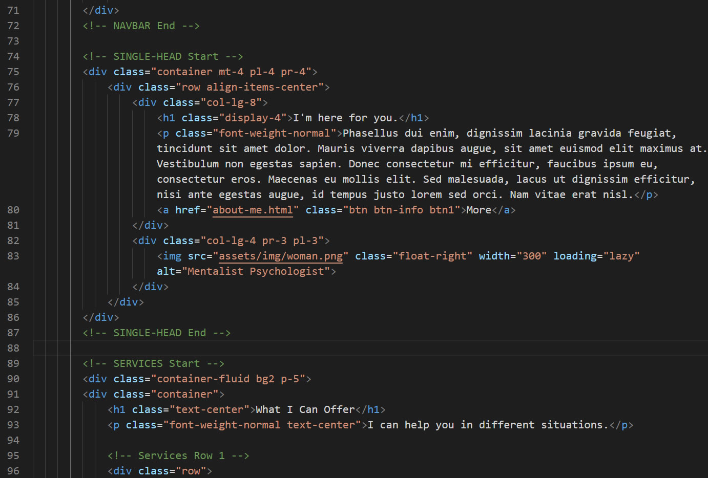
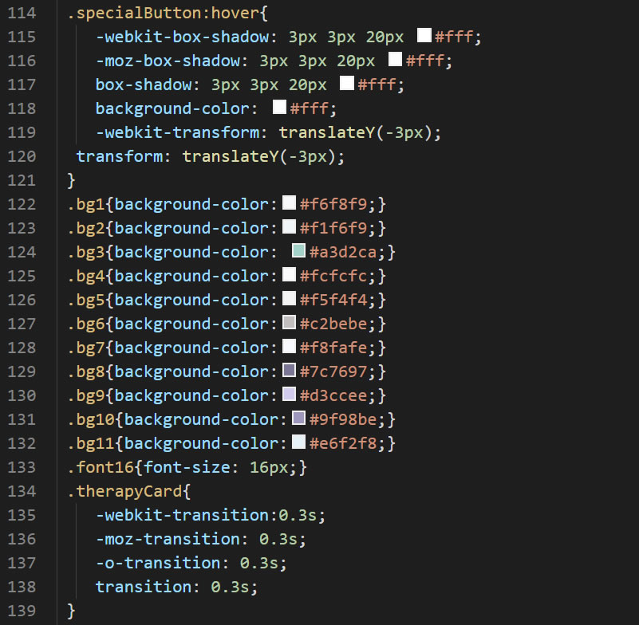

Thank you for purchasing my theme. If you have any questions that are beyond the scope of this help file, please feel free to email via my user page contact form. Thanks so much!
All of HTML files have description line. The Mentalist Theme is so modular structure.
You can choose any section and change the order.
This template uses two different CSS files: Bootstrap and Main (Custom). If you change any color, size, or something like that, you can use main.css file.
Example, you can change the "therapycard" transition time.
This template uses Google Fonts. You can change the font in main.css file. You can use the tool: https://google-webfonts-helper.herokuapp.com/fonts
I've used the following images, and icons.
Once again, thank you so much for purchasing this theme. As I said at the beginning, I'd be glad to help you if you have any questions relating to this theme. No guarantees, but I'll do my best to assist. If you have a more general question relating to the themes on ThemeForest, you might consider visiting the forums and asking your question in the "Item Discussion" section.